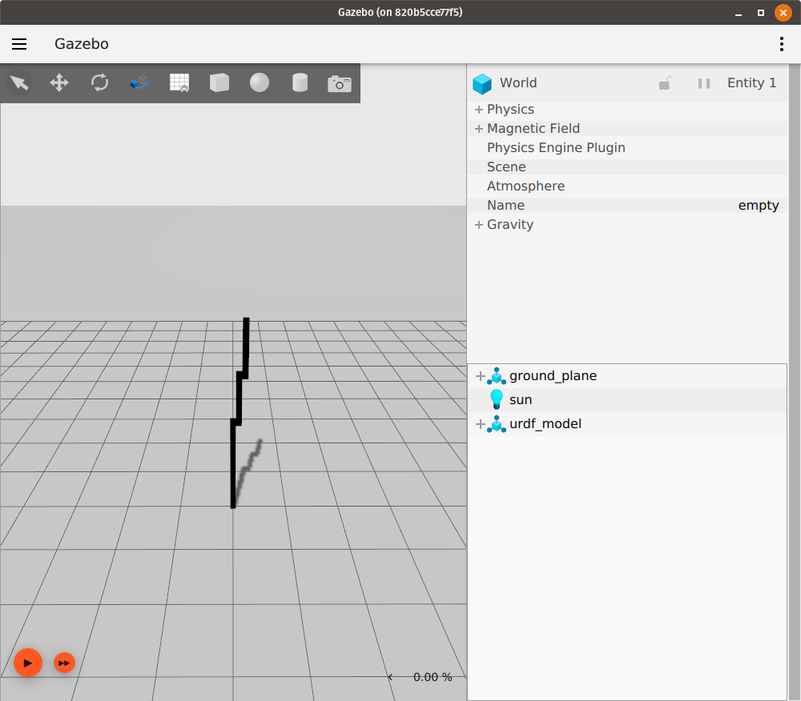

Spawn URDF
이 튜토리얼에서는 Gazebo Sim에서 URDF 모델을 생성하는 방법을 다룹니다. URDF 파일은 종종 ROS에서 로봇 모델을 나타내는 데 사용됩니다. SDF는 여러 로봇 모델이 있는 월드를 설명할 수 있지만, URDF는 하나의 로봇 모델만 설명할 수 있습니다. URDF에 대한 자세한 정보는 https://wiki.ros.org/urdf에서 찾을 수 있습니다.
Obtaining a URDF file
이 튜토리얼은 독자가 이미 Gazebo Sim에 로드하려는 URDF 파일을 가지고 있다고 가정합니다.
사용할 URDF 파일을 찾고 있다면, 미리 처리된 rrbot.urdf를 사용할 수 있습니다. rrbot 로봇 모델은 gazebo_ros_demos 패키지에서 가져온 것입니다. https://wiki.ros.org/urdf/Examples에 나열된 예제 중 하나를 사용할 수도 있습니다.
로봇 모델의 xacro 표현이 있는 경우, xacro 패키지를 사용하여 xacro 파일을 URDF 파일로 변환할 수 있습니다: 자세한 내용은 this tutorial을 참조하십시오.
Spawning the URDF
Gazebo Sim에서 URDF 모델을 생성하기 위해 월드를 시작하고 월드의 create 서비스를 사용합니다. 이 서비스는 EntityFactory 메시지 유형을 사용합니다.
Gazebo Sim에서 빈 월드를 시작합니다:
gz sim empty.sdf
다음과 같은 창이 나타납니다:

다른 터미널에서 gz service -l을 실행하여 사용 가능한 서비스 목록을 가져옵니다.
create 서비스를 찾습니다.
목록에서 이 서비스를 볼 수 있습니다:
/world/empty/create
gz service -is /world/empty/create를 실행하여 이 서비스가 우리가 사용하려는 서비스인지 다시 확인할 수 있습니다.
그러면 서비스의 요청 및 응답 메시지 유형이 표시됩니다:
gz.msgs.EntityFactory, gz.msgs.Boolean
이제 EntityFactory 요청 유형을 가진 서비스를 찾았으므로, 이 서비스를 호출하고 URDF 파일을 서비스의 요청에 전달하여 이 URDF 파일로 표현되는 로봇이 Gazebo Sim 월드에 생성되도록 할 수 있습니다.
이를 위해 EntityFactory 요청 메시지의 sdf_file_name 필드에 원하는 URDF 파일을 설정합니다.
그러면 libsdformat 라이브러리가 내부적으로 URDF 파일을 SDF 표현으로 변환하고 실행 중인 월드에 로드합니다.
다음 명령은 URDF 파일 model.urdf를 urdf_model이라는 이름의 모델로 Gazebo Sim 월드에 생성합니다:
gz service -s /world/empty/create --reqtype gz.msgs.EntityFactory --reptype gz.msgs.Boolean --timeout 1000 --req 'sdf_filename: "/path/to/model.urdf", name: "urdf_model"'
model.urdf가 gazebo_ros_demos 패키지의 rrbot.xacro의 URDF 표현인 경우, 위의 서비스 호출을 실행하면 시뮬레이션이 이제 다음과 같이 보입니다:

이제 시뮬레이션을 재생하여 로드된 URDF 모델이 예상대로 작동하는지 확인할 수 있습니다: